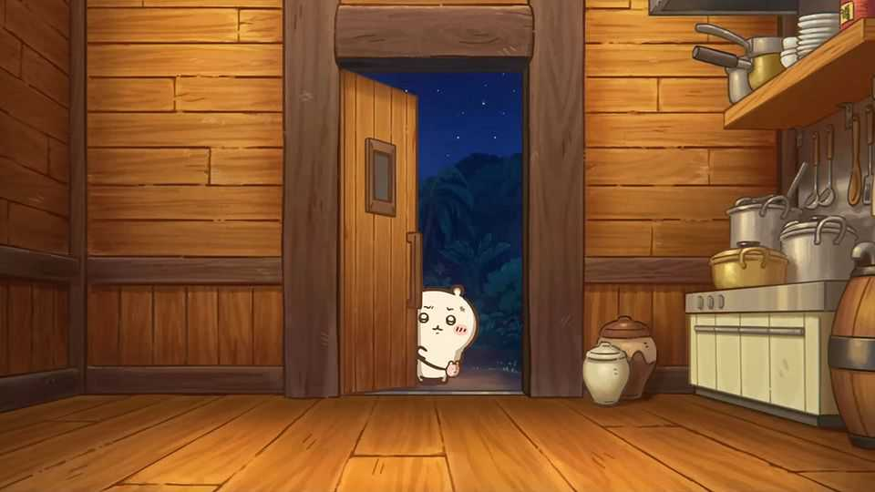

Chiikawa, star of a Japanese blockbuster, appeals in anxious times
A tiny, weeping, hamster-like creature has conquered East Asia

Sep 10th 2026
For a film that looks as if it was made for five-year-olds, the plot is surprisingly grim. Two islanders have eaten a mermaid and gained eternal life. A sea monster wants revenge. She inflicts terror on the island, devouring innocents and attacking visitors. Three big-eyed creatures armed with spear-like weapons are brought in to stop her. The smallest, Chiikawa—a white, hamster-like puffball—finds the task overwhelming and cries a lot.
“Chiikawa the Movie: The Secret of the Mermaid Island” is currently Japan’s hottest film. Ticket sales topped ¥10bn ($63m) in the month after its release on July 24th. But the craze is not confined to the cinema, nor to Japan. Fans buy Chiikawa toys; they binge on Chiikawa snacks, anime and manga. The character, whose full name translates to “something kind of small and cute”, is the latest Japanese kawaii (cute) creation to conquer East Asia.
Chiikawa emerged in a comic strip posted by Nagano, an illustrator, on social media in 2020. The strip went viral as it “filled the void in people’s hearts” during the pandemic, reckons Nakayama Atsuo, a sociologist. An anime series followed, as did a partnership with Miniso, a Chinese retail giant, which produced huge sales. In the past two years trains and metro stations in Hong Kong have been decorated with Chiikawa art. (As commuters passed through ticket barriers, they could even hear the character’s squeals.)
The appeal starts with the irresistible designs. Kawaii, from Hello Kitty to Pikachu, is one of Japan’s most successful cultural exports. Chinese social-media users call such characters “digital ibuprofen” for the comfort they provide.
Yet Chiikawa’s world is anything but painless. The characters scrape by in a gig economy. (One job they perform is weeding, which requires a licence; Chiikawa fails the exam despite studying hard.) There is body horror: friends can mutate into terrifying chimeras. Background characters are depicted as faceless grey shadows, evoking urban loneliness. “It’s cute but also dark—and that’s appealing,” says Arif Irsyad, a 22-year-old Malaysian visiting a Chiikawa shop in Tokyo.
In tough times, the characters’ friendships get them through. Chiikawa can barely speak, but the eloquent Hachiware understands them perfectly. In one episode the pair study ramen-ordering etiquette at an internet café, but when the server asks if they want garlic, Chiikawa bursts into tears. Hachiware orders for them both.
Many fans empathise with Chiikawa’s fragile state. The franchise “acknowledges this world is highly anxious”, says Jayson Chun, an academic. “And it tells you: ‘You know what? It’s okay to be anxious.’” ■